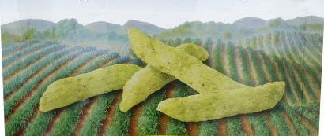
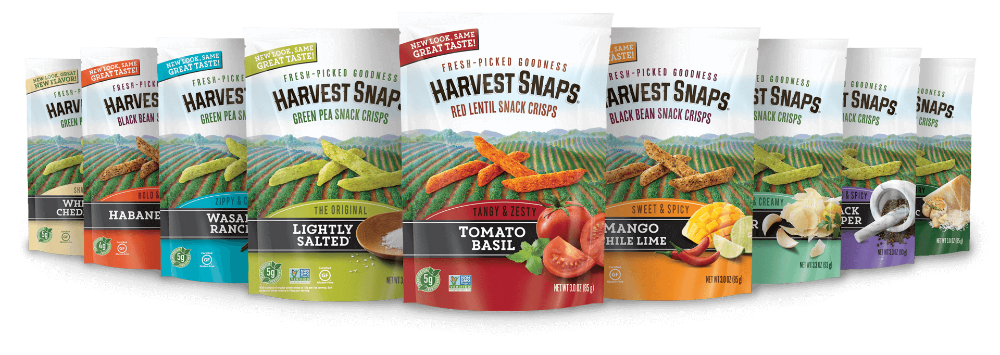

NEW LOOK, SAME
GREAT TASTE!
FRESH-PICKED GOODNESS
HARVEST SNAPS
GREEN PEA SNACK CRISPS
BEST BEFORE
Oct 28 19 01 00:26 S

THE ORIGINAL
LIGHTLY
SALTED
NET WT 3.3 OZ (93 g)
FRESH-PICKED GOODNESS
HARVEST SNAPS
GREEN PEA SNACK CRISPS

The savory crunch that started it all.
And since Green Peas are the 1st ingrediant,
Harvest Snaps turns farm direct vegetables
into pure deliciousness.
Our first
ingredient is
Green Peas!
SO MANY CRISPY, DELICIOUS FLAVORS FOR YOU TO TRY!

Did you know?
Baked, never fried Farm direct peas
50% less fat* Found in the produce aisle
*Fat content of regular potato chips is 10g per 1 oz serving;
Fat content of these snacks is 5g per serving.